Online Exhibit → Gulag Museum
Memorials to Victims

On the eve of the Soviet Union’s collapse, some Russian historians, human rights activists, former Gulag prisoners, and others created civic organizations to help foster remembrance. One of the most prominent, the Memorial Society, erected small monuments throughout the country to commemorate victims of totalitarianism. Scientist, political activist, and Nobel Peace Price winner, Andrei Sakharov became the orgranization’s first president.

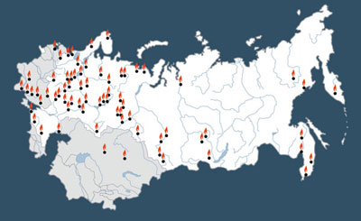
Locations of regional branches and some of the monuments erected by the Memorial Society.
Map courtesy of the Gulag Museum at Perm-36.
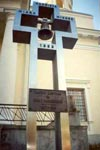

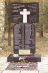

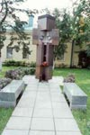

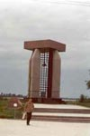

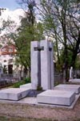

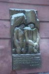

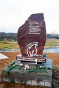

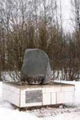

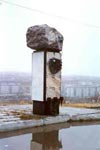

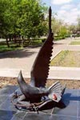

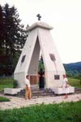

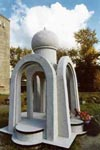

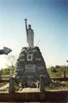

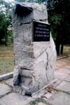

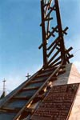

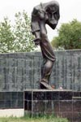

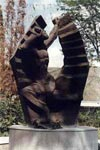

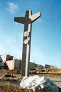

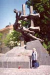

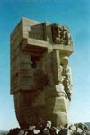

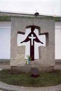

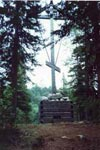

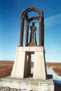

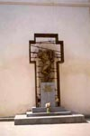
Monuments in honor of political repression victims.

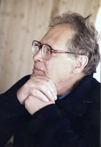
Sergei Kovalev
One of the founders and leaders of the Memorial Society and the human rights commissioner under Russian President Boris Yeltsin. Kovalev, a former prisoner at Perm-36, served as chairman of the Human Rights Committee in the Russian Parliament. Because of his adamant opposition to the Russian war in Chechnya, he was removed from his official government positions in 1995. Currently, Sergei Kovalev serves on the Gulag Museum Board of Directors.

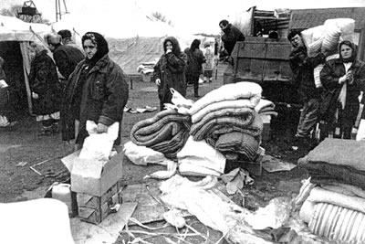
Memorial Society activists providing humanitarian aid to Chechnyan refugees, Iman Refugee Camp, Ingushetia, Russia, 1999.
Courtesy of the International Memorial Society.One of the International Memorial Society’s projects is the creation of the Memorial Museum of Political Repression History at Perm-36.

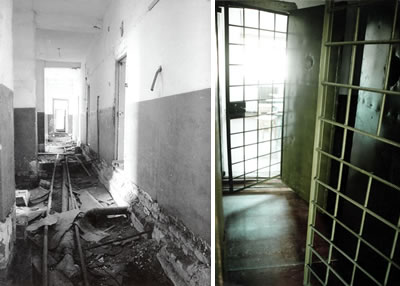

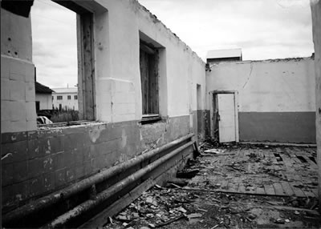

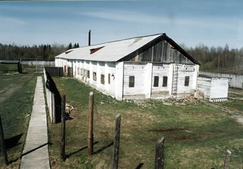

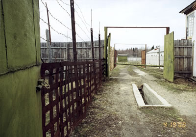
Perm-36 camp buildings before and after the restoration.
Courtesy of the Gulag Museum at Perm-36.Online Exhibit | Reflections | Traveling Exhibit | Teacher Resources | About
© 2006–2021, Center for History and New Media, George Mason University.